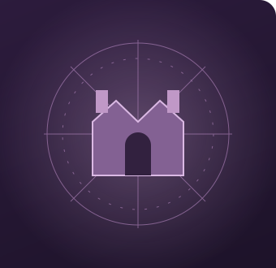

The Towns & Kingdoms handbook
Build your workshop.
Grow your kingdom.
One home for the adventure, the machinery and the magic. Explore T&K3, follow the recipes, or revisit the complete T&K2 wiki.

5 chapters
Current workshop progression
Current workshop progression
662 recipes
Authored routes in tiers 1–5
Authored routes in tiers 1–5
81 quests
Goals and permanent rewards
Goals and permanent rewards
11 wiki pages
Full legacy and 3.0 migration
Full legacy and 3.0 migration
Minecraft 1.21.1 · NeoForge
Explore T&K3
The current foundation: connected engineering, magic, combat and kingdoms.
Explore →Interactive workshop
See a recipe work
Step through ordered deployments, tool finishing, fluids and apparatus recipes.
Explore →Automation field guide
Build a reliable factory
Crop and tree farms, early collection, resource generators and practical fixes.
Explore →Chapters I–V
Follow the chapters
All 81 quests, prerequisites and permanent workshop rewards.
Explore →Character progression
Shape your character
Six classes, eighteen subclasses and four profession branches.
Explore →